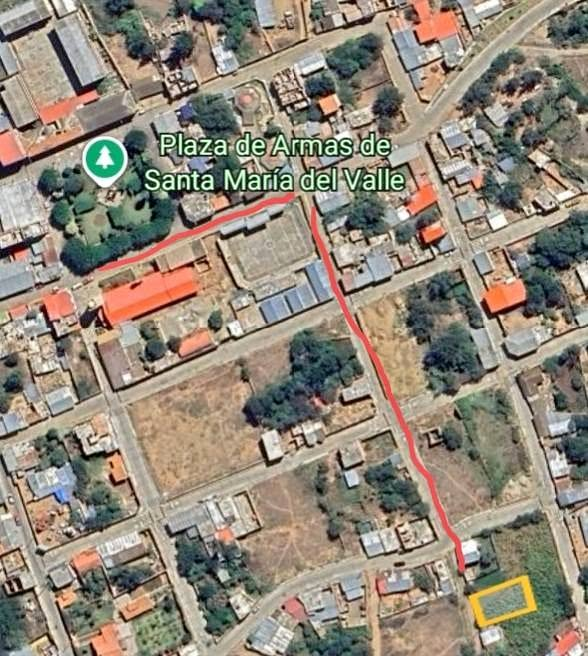

Precio desconocido 294 m²

Se vende terreno a 2 min de la plaza principal de Santa María del Valle, con título de propiedad, con conexión de agua y desagüe, solo gente interesada.
Abrir en CompraTerrenos.pe →